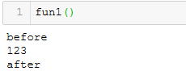

不改变原函数的情况下，在函数前后增加一些内容 即装饰器。如计算函数的运行时间
def 外层函数(参数):
def 内层函数(*arg, **kwargs):
return 参数(*arg, **kwargs）
return 内层函数@装饰器外层函数名
def 被装饰的函数名():
函数内容
1. 将下面的函数当做参数传入装饰器函数中
2. 将装饰器函数的返回值重新复制给下面的函数
def func(fun):
def inner():
print('before')
v = fun()
print('after')
return v
return inner
@func
def fun1():
print(123)执行 fun1 其实是执行了装饰器内部的inner函数，inner函数内部包含了fun1函数，同时在fun1函数前后增加了需要的内容
